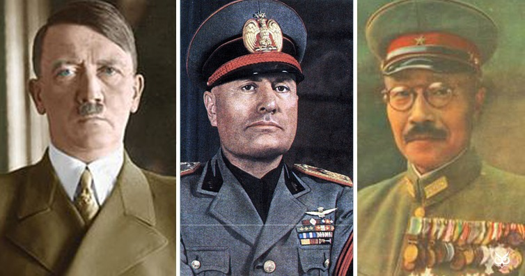

Tengelyhatalmak
A tengelyhatalmak, amelyeket eredetileg Berlin-Róma tengelynek neveztek, egy katonai szövetség volt, amely a második világháborúban harcolt a Szövetségesek hatalmak ellen. A tengelyhatalmak egyetértettek a szövetségesekkel szembeni ellenállásukban, de tevékenységüket nem koordinálták teljesen.
A tengelyhatalmak szövetsége a náci Németország, az Olasz Királyság és a Japán Birodalom diplomáciai erőfeszítéseiből nőtt ki, amelyek az 1930-as évek közepén saját expanzionista(növekedő) érdekeiket biztosították. Az első lépés az 1936 októberében Németország és Olaszország által aláírt jegyzőkönyv volt. Benito Mussolini 1936. november 1 -én kijelentette, hogy ettől kezdve minden más európai ország forogni fog a Berlin-Róma tengelyen, és így létrehozza a tengely kifejezést. A majdnem egyidejű második lépés az 1936 novemberében aláírt antikomintern paktum, amely a Németország és Japán között létrejött kommunistaellenes szerződés. Olaszország 1937-ben, Magyarország és Spanyolország pedig 1939-ben csatlakozott a paktumhoz. A "Berlin-Róma tengely" katonai szövetséggé vált 1939-ben az úgynevezett "Acélpaktum" keretében, majd az 1940. évi Háromhatalmi egyezmény pedig a Németország, Olaszország és Japán katonai céljait egyesítette. Mint ilyen, a Kominternellenes Paktum, a Háromhatalmi egyezmény és az Acélpaktum voltak azok a megállapodások, amelyek a tengelyhatalmak fő alapját képezték.

Európán belül az "a tengely" kifejezés mai napig is elsődlegesen a Németország és Olaszország közötti szövetségre utal, bár Európán kívül alapból úgy értik, hogy Japán is beletartozik.
A második világháború tetőpontján, 1942 -ben a tengelyhatalmak Európa nagy részét, Észak -Afrikát és Kelet -Ázsiát is elfoglalta. A Szövetségesekkel ellentétben nem voltak háromirányú csúcstalálkozók, és az együttműködés és a koordináció is minimális volt, és alkalmanként a tengely nagyhatalmainak érdekei ellentmondottak egymásnak. A háború 1945 -ben a tengelyhatalmak vereségével és szövetségük felbomlásával ért véget. Akárcsak a szövetségesek esetében, a tengelyben való tagság is folyékony volt, egyes országok a háború folyamán oldalt váltottak, vagy katonai részvételük mértékét megváltoztatták.
Keletkezés
A "tengely" kifejezést először Benito Mussolini olasz miniszterelnök alkalmazta az olasz-német viszonyra 1923 szeptemberében, amikor Roberto Suster Germania Repubblica előszavában azt írta, hogy "kétségtelen, hogy ebben a pillanatban az európai történelem tengelye átmegy Berlinen "(non v'ha dubbio che in questo momento l'asse della storia europea passa per Berlino). Abban az időben szövetséget akart keresni a weimari köztársasággal Jugoszlávia és Franciaország ellen a Fiume szabad állam körüli vitában.
Ezt a kifejezést Gömbös Gyula magyar miniszterelnök használta, amikor Magyarország harmincas évek elején Németországgal és Olaszországgal való szövetségét szorgalmazta. Gömbös erőfeszítései valóban befolyásolták az itáliai-magyar Római Jegyzőkönyveket, de hirtelen halála 1936-ban, amikor Németországgal tárgyalt Münchenben, és Darányi Kálmán, utódja érkezése, megszüntette Magyarország részvételét a háromoldalú tengely követésében. Az olasz külügyminiszter, Galeazzo Ciano és Ulrich von Hassell német nagykövet közötti vitás tárgyalások eredményeként egy tizenkilenc pontos jegyzőkönyv született, amelyet Ciano és német kollégája, Konstantin von Neurath írt alá 1936-ban. Amikor Mussolini nyilvánosan bejelentette az aláírást November 1 -én kihirdette a Berlin-Róma tengely létrehozását.
Egy német – olasz szövetség kezdeti javaslatai
Olaszország Duce Benito Mussolini vezetésével már az 1920 -as évek eleje óta stratégiai szövetséget szeretett volna kötni Németországgal, Franciaország ellen. Mielőtt az olasz fasiszta mozgalom vezetőjeként Olaszországban kormányfő lett, Mussolini a párizsi békekonferencia (1919–1920) lezárása után szövetséget hirdetett a legyőzött Németországgal. Úgy vélte, hogy azzal, hogy szövetséget köt Németországgal, kiterjesztheti befolyását Európában Franciaország ellen. 1923 elején, jóakaratú gesztusként Olaszország titokban fegyvereket szállított a német hadseregnek, amely a Versailles -i Szerződés rendelkezései szerint komoly leszerelésnek volt kitéve.
Az 1920 -as évek óta Olaszország az 1935 -ös esztendőt határozta meg a Franciaország elleni háborúra való felkészülés döntő dátumaként, mivel 1935 -ben lejárt a német Versailles -i Szerződés szerinti kötelezettsége. 1924 -ben Berlinben találkoztak Luigi Capello olasz tábornok és a német hadsereg prominens személyiségei, például von Seeckt és Erich Ludendorff között a Németország és Olaszország közötti katonai együttműködés kapcsán. A megbeszélések arra a következtetésre jutottak, hogy a németek továbbra is bosszúháborút akarnak Franciaország ellen, de hiányoznak a fegyverek, és remélik, hogy Olaszország segíteni tudja Németországot.
Mussolini azonban ekkor egy fontos feltételt hangsúlyozott, amelyet Olaszországnak mindenképpen be kell tartania a Németországgal való szövetségben: hogy Olaszországnak „vontatnia kell őket, nem pedig általuk vontatódni”. Dino Grandi olasz külügyminiszter a harmincas évek elején hangsúlyozta a "döntő súly" fontosságát, amely magában foglalja Olaszország szerepét a Franciaország és Németország közötti kapcsolatban, amelyben felismerte, hogy Olaszország még nem nagyhatalom, de úgy ítélte meg, hogy Olaszországnak van elég erős befolyása ahhoz, hogy megváltoztassa az európai politikai helyzetet azzal, hogy egyik vagy másik oldalára helyezte támogatásának súlyát, és törekedett a három közötti kapcsolatok kiegyensúlyozására.

Duna szövetség, vita Ausztria körül
1933 -ban Adolf Hitler és a náci párt hatalomra került Németországban. Hitler az 1920 -as évek óta szövetséget szorgalmazott Németország és Olaszország között. Röviddel a kancellári kinevezés után Hitler személyes üzenetet küldött Mussolininek, amelyben kijelentette: "csodálat és tiszteletadás", és kijelenti, hogy előre látja a német-olasz szövetség, sőt a barátság kilátásait. Hitler tisztában volt azzal, hogy Olaszország aggódik a Dél -Tirollal szembeni esetleges német földigények miatt, és biztosította Mussolinit, hogy Németországot nem érdekli Dél -Tirol. Hitler a Mein Kampf-ban kijelentette, hogy Dél-Tirol nem probléma, figyelembe véve a német-olasz szövetségből származó előnyöket. Hitler hatalomra jutása után Nagy -Britannia érdeklődéssel nézte Olaszaszország Négyhatalmi Igazgatóság javaslatát, de Hitler nem volt elkötelezett mellette, ami azt eredményezte, hogy Mussolini felszólította Hitlert, hogy vegye fontolóra azokat a diplomáciai előnyöket, amelyeket Németország nyerne azzal, ha kitörne az elszigeteltségből azzal, hogy belép az Igazgatóságba, ezzel elkerülve az azonnali fegyveres konfliktust. A Négyhatalmi Igazgatóság javaslata kikötötte, hogy Németország fegyverkezése már nem lenne korlátozott, és szakaszokban megkapja a jogot az újra fegyverkezésre, külföldi felügyelet mellett. Hitler teljesen elutasította azt az elképzelést, hogy külföldi felügyelet mellett fegyverkezzenek.
Mussolini nem bízott Hitler Anschlussra vonatkozó szándékában, sem abban, hogy Hitler nem fog területi követeléseket tenni Dél - Tirol ellen. Mussolini arról tájékoztatta Hitlert, hogy elégedett Dollfuss Marxistaellenes kormányának jelenlétével Ausztriában, és figyelmeztette Hitlert, hogy határozottan ellenzi Anschlusst. Hitler megvetően válaszolt Mussolininek, hogy "Dollfussot a tengerbe akarja dobni". Ezzel az Ausztriával kapcsolatos nézeteltéréssel Hitler és Mussolini kapcsolata folyamatosan romlodt.

Hitler megpróbálta megtörni a holtpontot Olaszországgal Ausztria felett azzal, hogy 1933 -ban Hermann Göringet küldte tárgyalni Mussolinivel, hogy meggyőzze Mussolinit, hogy kényszerítse rá az osztrák kormányt, hogy az osztrák nácikat nevezzékj ki tagjainak. Göring azt állította, hogy Ausztria náci uralma elkerülhetetlen, és Olaszországnak ezt el kell fogadnia, valamint megismételte Mussolininek Hitler ígéretét, miszerint "a dél -tiroli határ kérdését a békeszerződések végleg felszámoltnak tekintik". Göring Mussolininek tett látogatására válaszul Dollfuss azonnal Olaszországba ment, hogy ellensúlyozza a német diplomáciai előrelépéseket. Dollfuss azt állította, hogy kormánya aktívan kihívja a marxistákat Ausztriában, és azt állította, hogy amint a marxistákat legyőzik Ausztriában, az osztrák nácik támogatottsága csökkenni fog.
1934 júniusában Hitler és Mussolini először találkozott Velencében. A találkozó nem éppen békésen folyt le. Hitler megkövetelte, hogy Mussolini kompromisszumot kössön Ausztriával szemben, és nyomást gyakoroljon Dollfussra, hogy osztrák nácikat nevezzen ki kabinetjébe, amely követelését Mussolini határozottan elutasított. Válaszul Hitler megígérte, hogy egyelőre elfogadja Ausztria függetlenségét, mondván, hogy a németországi belső feszültségek miatt (utalva a náci strasserista szakaszaira, amelyeket Hitler hamarosan megöl a Hosszú kések éjszakájában), Németország nem engedheti meg magának, hogy provokálja Olaszországot. Galeazzo Ciano a sajtónak elmondta, hogy a két vezető "úri megállapodást" kötött annak elkerülése érdekében, hogy beavatkozzanak Ausztriában.
Néhány héttel a velencei találkozó után, 1934. július 25 -én osztrák nácik meggyilkolták Engelbert Dollfussot. Mussolini felháborodott, mivel közvetlenül Hitlert tartotta felelősnek a merényletért, amely megsértette Hitler ígéretét, amelyet hetekkel ezelőtt tett az osztrák függetlenség tiszteletben tartására. Mussolini gyorsan bevetett több hadosztályt és légiszázadot a Brenner -hágóba, és figyelmeztette, hogy az Ausztria elleni német lépés háborúhoz vezethet Németország és Olaszország között. Hitler erre válaszul tagadta a náci felelősséget a merényletért, és parancsot adott a Német Náci Párt és annak osztrák ága közötti kapcsolatok feloszlatására, amely Németország szerint felelős a politikai válságért.
Olaszország gyakorlatilag felhagyott a diplomáciai kapcsolatokkal Németországgal, miközben Franciaországhoz fordult annak érdekében, hogy megkérdőjelezze Németország hajthatatlanságát, és aláírta az osztrák függetlenség védelméről szóló francia-olasz megállapodást. A francia és az olasz katonai stáb megbeszélte a lehetséges katonai együttműködést, amely háborúval járna Németországgal, ha Hitler megmerné támadni Ausztriát.
A Németország és Olaszország közötti kapcsolatok helyreálltak, mivel Hitler támogatta Olaszország 1935 -ös Etiópia -invázióját, míg más országok elítélték az inváziót és megtorlást szorgalmaztak Olaszország ellen.
Német – olasz – japán szövetség kialakítása
Németország és Japán érdeklődése egy szövetség létrehozása iránt akkor kezdődött, amikor Oshima Hiroshi japán diplomata 1935 -ben meglátogatta Joachim von Ribbentropot Berlinben. Oshima tájékoztatta von Ribbentropot arról, hogy Japán érdeklődik a Szovjetunió elleni német – japán szövetség létrehozása iránt. Von Ribbentrop támogatta a szövetséget és kiegészítette Oshima javaslatát azzal, hogy a szövetség alapja politikai kontextusban arról szóljon, hogy felveszik a harcot a kommunizmus ellen. A javasolt egyezményt Japánban vegyes vélemények fogadták. A kormányon belüli ultranacionalisták egy része támogatta a paktumot, míg a japán haditengerészet és a japán külügyminisztérium határozottan ellenezte. A japán kormányban nagy volt az aggodalom, hogy egy ilyen paktum Németországgal megzavarhatja a Japán és Nagy-Britannia közötti kapcsolatot, veszélyeztetve az évekig tartó jótékony angol-japán megegyezést, amely lehetővé tette Japán számára, hogy felemelkedjen a nemzetközi közösségbe. A paktumra adott válasz hasonló megosztottsággal járt Németországban; Míg a javasolt egyezmény népszerű volt a náci párt felső határai körében, azt sokan ellenezték a külügyminisztériumban, a hadseregben és az üzleti közösségben, akik pénzügyi érdekeltségeket viseltek Kínában, amely Japán ellenséges volt.
Miután megtudta a német – japán tárgyalásokat, Olaszország is érdeklődni kezdett egy Japánnal való szövetség kialakítása iránt. Olaszország azt remélte, hogy a Japán és Nagy-Britannia közötti hosszú távú szoros kapcsolatai miatt egy itáliai-japán szövetség nyomást gyakorolhat Nagy-Britanniára, hogy elfogadóbb álláspontot képviseljen Olaszországgal szemben a Földközi-tengeren. 1936 nyarán Ciano olasz külügyminiszter tájékoztatta Sugimura Yotaro japán olasz nagykövetet: „Hallottam, hogy a Japán – Német megállapodás megszületett a Szovjetunióval kapcsolatban, és úgy gondolom, természetes lenne, ha hasonló megállapodás születne Olaszország és Japán között. Japán Olaszország javaslata ellen általában elutasító volt, és a Szovjetunió elleni német – japán szövetséget elengedhetetlennek tartotta, míg az olasz – japán szövetséget másodlagosnak tekintette, mivel Japán arra számított, hogy egy itáliai – japán szövetség nem fog tetszni Nagy-Britanniának, amely elítélte Olaszország Etiópiába való bevonulását. Japán hozzáállása Olaszországhoz 1937 -ben megváltozott, miután a Népszövetség elítélte Japánt a kínai agresszióért és nemzetközi elszigeteltséggel kellett szembenéznie, míg Olaszország továbbra is kedvező maradt Japán számára. Olaszország támogatása miatt a Japán a nemzetközi elítélés ellen, Japán pozitívabban viszonyult Olaszországhoz, és javaslatokat tett egy Olaszországgal való nem-agressziós vagy semlegességi paktumra.

A Háromhatalmi egyezmény-t Németország, Olaszország és Japán 1940. szeptember 27 -én, Berlinben írták alá. A paktumhoz később Magyarország (1940. november 20.), Románia (1940. november 23.), Szlovákia (1940. november 24.) és Bulgária (1941. március 1.) is csatlakozott.
Ideológia
A tengelyhatalmak elsődleges célja a területi terjeszkedés volt szomszédjaik rovására. Ideológiai értelemben a tengely céljaikat úgy jellemezte, hogy megtörik a "vagyonosabb rétegek uralmára építő" nyugati hatalmak hegemóniáját, és megvédik a civilizációt a kommunizmustól. A tengely a fasizmus, a militarizmus és az autarkia számos változatát támogatta. A területileg összefüggő autarkikus birodalmak létrehozása mindhárom nagy tengelyhatalom közös célja volt.
Gazdasági erőforrások
A tengely lélekszáma 1938 -ban 258,9 millió volt, míg a szövetségesek (a Szovjetuniót és a szövetségesekhez később csatlakozó Egyesült Államokat nem számítva) 689,7 millió fő. Így a szövetséges hatalmak 2,7–1 -arányban meghaladták a tengely hatáskörét. A vezető tengely államai a következő lakossággal rendelkeztek: Németország 75,5 millió (köztük 6,8 millió a nemrégiben annektált Ausztriából), Japán 71,9 millió (gyarmatai nélkül) és Olaszország 43,4 millió ( kolóniáit leszámítva). Az Egyesült Királyságban (kolóniáit leszámítva) 47,5 millió, Franciaországban (a kolóniák nélkül) 42 millió lakosa volt.
A tengely háborús bruttó hazai terméke (GDP) 911 milliárd dollár volt, 1941 -ben a legmagasabb, nemzetközi dollárban 1990 -es árakhoz képest. A szövetséges hatalmak GDP -je 1798 milliárd dollár volt. Az Egyesült Államok 1094 milliárd dollár volt, ami több, mint a tengely együttvéve.
A háborúnak a részt vevő országokra nehezedő terheit a bruttó nemzeti termék (GNP) katonai kiadásokra fordított százalékán keresztül mérték. Németország GNP-jének közel egynegyede elkötelezett a háborús erőfeszítések iránt 1939-ben, és ez 1944-ben, a gazdaság összeomlását megelőzően a GNP háromnegyedére emelkedett. 1939 -ben Japán GNP -jének 22 százalékát kötelezte el Kínában folytatott háborús erőfeszítéseire; ez 1944-ben a GNP háromnegyedére emelkedett. Olaszország nem mozgósította gazdaságát; a háborús erőfeszítések iránt elkötelezett GNP -je a háború előtti szinten maradt.

Olaszországból és Japánból hiányzott az ipari kapacitás; gazdaságaik kicsik voltak, a nemzetközi kereskedelemtől, az üzemanyag külső forrásaitól és más ipari erőforrásoktól függtek. Ennek eredményeképpen az olasz és japán mozgósítás alacsony maradt, még 1943 -ra is.
A három fő tengelyhatalom közül Japánban volt a legalacsonyabb az egy főre jutó jövedelem, míg Németország és Olaszország jövedelmi szintje az Egyesült Királyságéhoz volt hasonlítható.
Tagok
- Németország
- Olaszország
- Japán
Főbb tengelyhatalmak
- Bulgária
- Magyarország
- Horvátország független állama
- Románia
- Szlovákia
- Jugoszlávia (kétnapos tagság)
Egyéb Háromhatalmi egyezményt aláírók
- Kína (Kína újjászervezett nemzeti kormánya)
- Dánia
- Finnország
- Mandzsúria (Manchukuo)
- Spanyolország
Antikomintern paktum aláírói
- Burma (Ba Maw kormány)
- Thaiföld
- Szovjetunió
- Vichy Franciaország
- Irak
Kétoldalú paktumok a tengelyhatalmakkal
- Albánia (albán királyság)
- A katonai parancsnok területe Szerbiában
- Olaszország (Olasz Szociális Köztársaság)
- Német-olasz közös ügyfélállamok
- Görögország (Görög állam)
- Kambodzsa
- Azad Hind
- Belső -Mongólia (Mengjiang)
- Laosz
- Fülöp -szigetek (második köztársaság)
- Vietnam (Vietnam birodalma)
Bábállamok
Német:Japán:
English summary (angol összefoglaló)
The Axis powers, originally called the Rome–Berlin Axis, was a military coalition that fought in World War II against the Allies. The Axis powers agreed on their opposition to the Allies, but did not completely coordinate their activity.
The Axis grew out of the diplomatic efforts of Nazi Germany, the Kingdom of Italy, and the Empire of Japan to secure their own specific expansionist interests in the mid-1930s. The first step was the protocol signed by Germany and Italy in October 1936. Benito Mussolini declared on 1 November 1936 that all other European countries would from then on rotate on the Rome–Berlin axis, thus creating the term "Axis". The almost simultaneous second step was the signing in November 1936 of the Anti-Comintern Pact, an anti-communist treaty between Germany and Japan. Italy joined the Pact in 1937 and Hungary and Spain joined in 1939. The "Rome–Berlin Axis" became a military alliance in 1939 under the so-called "Pact of Steel", with the Tripartite Pact of 1940 leading to the integration of the military aims of Germany, Italy and Japan. As such the Anti-Comintern Pact, the Tripartite Pact, and the Pact of Steel were the agreements that formed the main bases of the Axis.
Particularly within Europe, the term "the Axis" is still often used primarily to refer to the alliance between Italy and Germany, though outside Europe it is normally understood as including Japan.
At its zenith in 1942 during World War II, the Axis presided over territories that occupied large parts of Europe, North Africa, and East Asia. In contrast to the Allies, there were no three-way summit meetings and cooperation and coordination was minimal, and on occasion the interests of the major Axis powers were at variance with each other. The war ended in 1945 with the defeat of the Axis powers and the dissolution of their alliance. As in the case of the Allies, membership of the Axis was fluid, with some nations switching sides or changing their degree of military involvement over the course of the war.